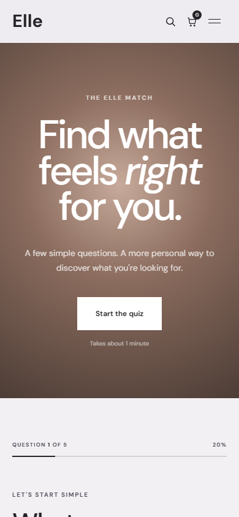
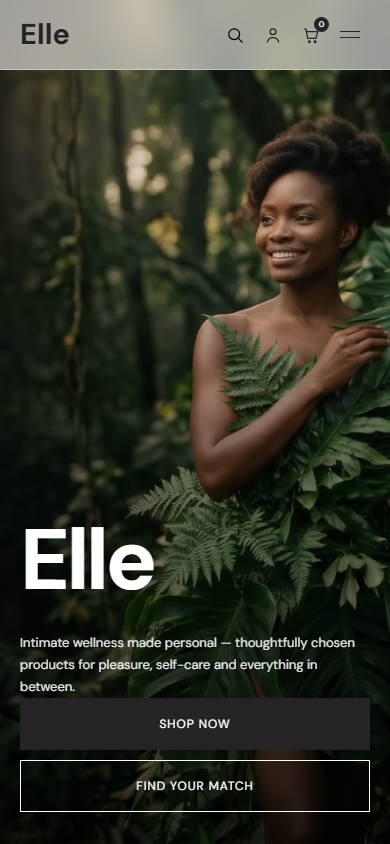

Not sure where to start?
You're not alone.
Intimate wellness should feel personal, not overwhelming.
You're not alone.
Intimate wellness should feel personal, not overwhelming.


No guesswork.
Everything arrives in plain, discreet packaging,
Take the Elle Match quiz,
find what feels right,
feel good — your way.